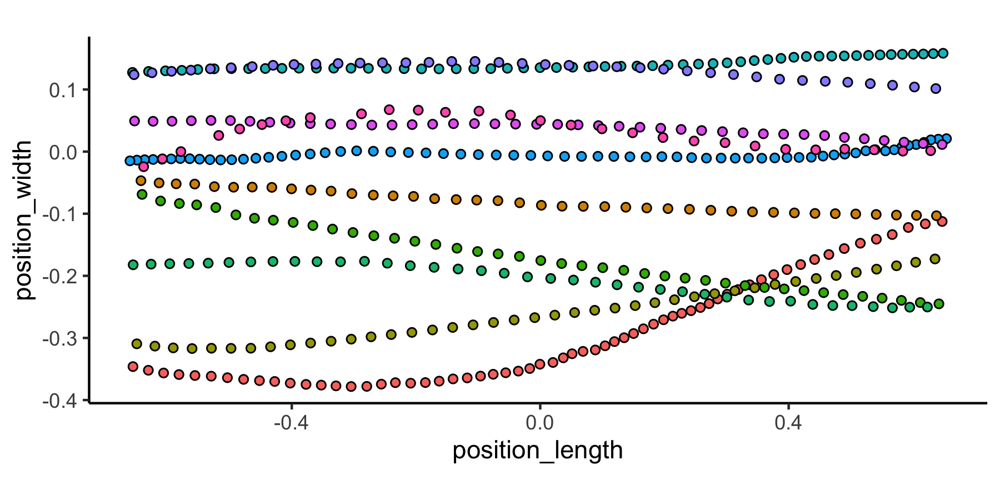
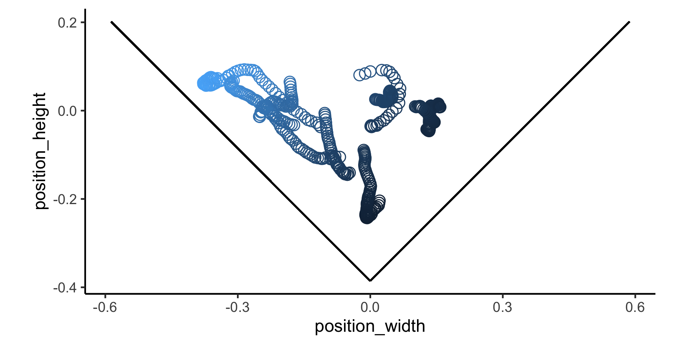

pathviewr offers tools to import, clean, and visualize movement data, particularly from motion capture systems such as Optitrack’s Motive, the Straw Lab’s Flydra, or other sources. We provide functions to remove artifacts, standardize tunnel position and tunnel axes, select a region of interest, isolate specific trajectories, fill gaps in trajectory data, and calculate 3D and per-axis velocity. For experiments of visual guidance, we also provide functions that use subject position to estimate perception of visual stimuli.
Installation
You can install pathviewr from CRAN via:
install.packages("pathviewr")Or to get the latest (developmental) version through GitHub, use:
devtools::install_github("ropensci/pathviewr")Example
Data import and cleaning via pathviewr
We’ll also load two tidyverse packages for wrangling & plotting in this readme.
We will import and clean a sample data set from .csv files exported by Optitrack’s Motive software. For examples of how to import and clean other types of data, see the Basics of data import and cleaning vignette.
## Import the Motive example data included in
## the package
motive_data <-
read_motive_csv(
system.file("extdata", "pathviewr_motive_example_data.csv",
package = 'pathviewr')
)Several functions to clean and wrangle data are available, and we have a suggested pipeline for how these steps should be handled. For this example, we will use one of two “all-in-one” functions: clean_viewr(). See the Basics of data import and cleaning vignette for the full pipeline and the other “all-in-one” function.
motive_allinone <-
motive_data %>%
clean_viewr(
relabel_viewr_axes = TRUE,
gather_tunnel_data = TRUE,
trim_tunnel_outliers = TRUE,
standardization_option = "rotate_tunnel",
select_x_percent = TRUE,
desired_percent = 50,
rename_viewr_characters = FALSE,
separate_trajectories = TRUE,
max_frame_gap = "autodetect",
get_full_trajectories = TRUE,
span = 0.95
)
#> autodetect is an experimental feature -- please report issues.
## Quick plot
## Colors correspond to unique trajectories (file_sub_traj)
motive_allinone %>%
ggplot(aes(x = position_length, y = position_width,
fill = file_sub_traj)) +
geom_point(pch = 21) +
coord_fixed() +
theme_classic() +
theme(
legend.position = "none"
)
To get a sense of what we’ve done, compare the data before and after it has passed through the pipeline.
## Check out the data's structure before cleaning and wrangling:
str(motive_data)
#> tibble [934 × 26] (S3: tbl_df/tbl/data.frame)
#> $ frame : int [1:934] 72210 72211 72212 72213 72214 72215 72216 72217 72218 72219 ...
#> $ time_sec : num [1:934] 722 722 722 722 722 ...
#> $ device02_rotation_x : num [1:934] 0.1346 0.0819 0.2106 0.1961 0.1305 ...
#> $ device02_rotation_y : num [1:934] -0.977 -0.978 -0.973 -0.972 -0.975 ...
#> $ device02_rotation_z : num [1:934] -0.1117 -0.0991 -0.0939 -0.1275 -0.1213 ...
#> $ device02_rotation_w : num [1:934] 0.1215 0.1654 0.0311 0.0351 0.1315 ...
#> $ device02_position_x : num [1:934] 0.142 0.137 0.125 0.118 0.113 ...
#> $ device02_position_y : num [1:934] 0.16 0.164 0.166 0.168 0.173 ...
#> $ device02_position_z : num [1:934] 2 1.97 1.95 1.92 1.89 ...
#> $ device02_mean_marker_error: num [1:934] 0.000113 0.000105 0.000115 0.000202 0.000106 0.000095 0.000114 0.000117 0.000121 0.000131 ...
#> $ device03_rotation_x : num [1:934] 0.107 0.111 0.109 0.109 0.108 ...
#> $ device03_rotation_y : num [1:934] -0.295 -0.295 -0.295 -0.295 -0.295 ...
#> $ device03_rotation_z : num [1:934] -0.088 -0.0866 -0.0853 -0.0853 -0.0879 ...
#> $ device03_rotation_w : num [1:934] 0.945 0.945 0.945 0.945 0.945 ...
#> $ device03_position_x : num [1:934] 0.222 0.222 0.222 0.222 0.222 ...
#> $ device03_position_y : num [1:934] 0.245 0.245 0.245 0.245 0.245 ...
#> $ device03_position_z : num [1:934] 0.0597 0.0597 0.0598 0.0598 0.0598 ...
#> $ device03_mean_marker_error: num [1:934] 0.000166 0.000172 0.000164 0.000163 0.000162 0.000162 0.000169 0.00017 0.00017 0.000213 ...
#> $ device05_rotation_x : num [1:934] 0.00672 0.00714 0.00709 0.00742 0.00826 ...
#> $ device05_rotation_y : num [1:934] 0.944 0.944 0.944 0.944 0.944 ...
#> $ device05_rotation_z : num [1:934] -0.117 -0.116 -0.118 -0.118 -0.117 ...
#> $ device05_rotation_w : num [1:934] 0.308 0.308 0.309 0.31 0.308 ...
#> $ device05_position_x : num [1:934] 0.173 0.173 0.173 0.173 0.173 ...
#> $ device05_position_y : num [1:934] 0.243 0.243 0.243 0.243 0.243 ...
#> $ device05_position_z : num [1:934] 2.66 2.66 2.66 2.66 2.66 ...
#> $ device05_mean_marker_error: num [1:934] 0.000241 0.000247 0.000255 0.000244 0.00023 0.000226 0.000231 0.000236 0.000242 0.000263 ...
#> - attr(*, ".internal.selfref")=<externalptr>
#> - attr(*, "pathviewr_steps")= chr "viewr"
#> - attr(*, "file_id")= chr "pathviewr_motive_example_data.csv"
#> - attr(*, "file_mtime")= POSIXct[1:1], format: "2025-06-13 10:44:21"
#> - attr(*, "frame_rate")= num 100
#> - attr(*, "header")='data.frame': 11 obs. of 2 variables:
#> ..$ metadata: chr [1:11] "Format Version" "Take Name" "Take Notes" "Capture Frame Rate" ...
#> ..$ value : chr [1:11] "1.23" "sept-18_mixed-group_16-30" "" "100.000000" ...
#> - attr(*, "Motive_IDs")= chr [1:24] "\"9E207518D8A311E969D7AB6B1FACE49B\"" "\"9E207518D8A311E969D7AB6B1FACE49B\"" "\"9E207518D8A311E969D7AB6B1FACE49B\"" "\"9E207518D8A311E969D7AB6B1FACE49B\"" ...
#> - attr(*, "subject_names_full")= chr [1:24] "device02" "device02" "device02" "device02" ...
#> - attr(*, "subject_names_simple")= chr [1:3] "device02" "device03" "device05"
#> - attr(*, "data_names")= chr [1:26] "frame" "time_sec" "device02_rotation_x" "device02_rotation_y" ...
#> - attr(*, "data_types_full")= chr [1:24] "Rigid Body" "Rigid Body" "Rigid Body" "Rigid Body" ...
#> - attr(*, "data_types_simple")= chr "Rigid Body"
#> - attr(*, "d1")= chr [1:26] "" "" "Rotation" "Rotation" ...
#> - attr(*, "d2")= chr [1:26] "Frame" "Time (Seconds)" "X" "Y" ...
#> - attr(*, "import_method")= chr "motive"
## Check out the data's structure after cleaning and wrangling:
str(motive_allinone)
#> tibble [449 × 24] (S3: tbl_df/tbl/data.frame)
#> $ frame : int [1:449] 72213 72214 72215 72216 72217 72218 72219 72220 72221 72222 ...
#> $ time_sec : num [1:449] 722 722 722 722 722 ...
#> $ subject : chr [1:449] "device02" "device02" "device02" "device02" ...
#> $ position_length : num [1:449] 0.647 0.62 0.593 0.567 0.541 ...
#> $ position_width : num [1:449] -0.112 -0.116 -0.122 -0.134 -0.141 ...
#> $ position_height : num [1:449] -0.0371 -0.0324 -0.0273 -0.0235 -0.0209 ...
#> $ rotation_length : num [1:449] -0.128 -0.121 -0.105 -0.106 -0.149 ...
#> $ rotation_width : num [1:449] 0.1961 0.1305 0.0935 0.1798 0.164 ...
#> $ rotation_height : num [1:449] -0.972 -0.975 -0.975 -0.975 -0.972 ...
#> $ rotation_real : num [1:449] 0.0351 0.1315 0.1734 0.0807 0.0824 ...
#> $ mean_marker_error: num [1:449] 0.000202 0.000106 0.000095 0.000114 0.000117 0.000121 0.000131 0.00014 0.000113 0.000114 ...
#> $ velocity : num [1:449] 2.73 2.78 2.84 2.85 2.68 ...
#> $ length_inst_vel : num [1:449] -2.65 -2.72 -2.74 -2.58 -2.56 ...
#> $ width_inst_vel : num [1:449] -0.642 -0.387 -0.58 -1.139 -0.75 ...
#> $ height_inst_vel : num [1:449] 0.184 0.475 0.508 0.379 0.258 ...
#> $ traj_id : int [1:449] 0 0 0 0 0 0 0 0 0 0 ...
#> $ file_sub_traj : chr [1:449] "pathviewr_motive_example_data.csv_device02_0" "pathviewr_motive_example_data.csv_device02_0" "pathviewr_motive_example_data.csv_device02_0" "pathviewr_motive_example_data.csv_device02_0" ...
#> $ traj_length : int [1:449] 63 63 63 63 63 63 63 63 63 63 ...
#> $ start_length : num [1:449] 0.647 0.647 0.647 0.647 0.647 ...
#> $ end_length : num [1:449] -0.656 -0.656 -0.656 -0.656 -0.656 ...
#> $ length_diff : num [1:449] 1.3 1.3 1.3 1.3 1.3 ...
#> $ start_length_sign: num [1:449] 1 1 1 1 1 1 1 1 1 1 ...
#> $ end_length_sign : num [1:449] -1 -1 -1 -1 -1 -1 -1 -1 -1 -1 ...
#> $ direction : chr [1:449] "leftwards" "leftwards" "leftwards" "leftwards" ...
#> - attr(*, "file_id")= chr "pathviewr_motive_example_data.csv"
#> - attr(*, "file_mtime")= POSIXct[1:1], format: "2025-06-13 10:44:21"
#> - attr(*, "frame_rate")= num 100
#> - attr(*, "header")='data.frame': 11 obs. of 2 variables:
#> ..$ metadata: chr [1:11] "Format Version" "Take Name" "Take Notes" "Capture Frame Rate" ...
#> ..$ value : chr [1:11] "1.23" "sept-18_mixed-group_16-30" "" "100.000000" ...
#> - attr(*, "Motive_IDs")= chr [1:24] "\"9E207518D8A311E969D7AB6B1FACE49B\"" "\"9E207518D8A311E969D7AB6B1FACE49B\"" "\"9E207518D8A311E969D7AB6B1FACE49B\"" "\"9E207518D8A311E969D7AB6B1FACE49B\"" ...
#> - attr(*, "subject_names_full")= chr [1:24] "device02" "device02" "device02" "device02" ...
#> - attr(*, "subject_names_simple")= chr [1:3] "device02" "device03" "device05"
#> - attr(*, "data_names")= chr [1:26] "frame" "time_sec" "device02_rotation_x" "device02_rotation_y" ...
#> - attr(*, "data_types_full")= chr [1:24] "Rigid Body" "Rigid Body" "Rigid Body" "Rigid Body" ...
#> - attr(*, "data_types_simple")= chr "Rigid Body"
#> - attr(*, "d1")= chr [1:26] "" "" "Rotation" "Rotation" ...
#> - attr(*, "d2")= chr [1:26] "Frame" "Time (Seconds)" "X" "Y" ...
#> - attr(*, "import_method")= chr "motive"
#> - attr(*, "pathviewr_steps")= chr [1:10] "viewr" "renamed_tunnel" "gathered_tunnel" "artifacts_removed" ...
#> - attr(*, "perch1_midpoint_original")= num [1:3] 0 0.2 0.205
#> - attr(*, "perch2_midpoint_original")= num [1:3] 2.54 0.24 0.205
#> - attr(*, "tunnel_centerpoint_original")= num [1:3] 1.27 0.22 0.205
#> - attr(*, "rotation_degrees")= num 0.902
#> - attr(*, "rotation_radians")= num 0.0157
#> - attr(*, "perch1_midpoint_current")= num [1:3] -1.27 4.65e-15 2.05e-01
#> - attr(*, "perch2_midpoint_current")= num [1:3] 1.27 -4.65e-15 2.05e-01
#> - attr(*, "percent_selected")= num 50
#> - attr(*, "full_tunnel_length")= num 2.64
#> - attr(*, "selected_tunnel_length")= num 1.32
#> - attr(*, "max_frame_gap")= int [1:3] 1 1 2
#> - attr(*, "span")= num 0.95
#> - attr(*, "trajectories_removed")= int 5An important aspect of how pathviewr defines trajectories is by managing gaps in the data. See the vignette on Managing frame gaps for more information on trajectory definition and frame gaps.
Now that the data is cleaned, pathviewr includes functions that estimate visual perceptions based on the distance between the subject/observer and visual stimuli on the walls of the experimental tunnel. For a complete description of these functions, see the vignette on Estimating visual perceptions from tracking data.
Add more info about experiments
Now that our objects have been cleaned, we will use insert_treatments() to add information about the experiments that are necessary for calculating visual perceptions.
The data from this example were recorded in a V-shaped tunnel. Accordingly, the vertex angle and vertex height of the tunnel, along with information about the visual stimuli used during the experiment, will be added to the data to inform calculations of visual perception (next section).
motive_V <-
motive_allinone %>%
insert_treatments(
tunnel_config = "v",
perch_2_vertex = 0.4,
vertex_angle = 90,
tunnel_length = 2,
stim_param_lat_pos = 0.1,
stim_param_lat_neg = 0.1,
stim_param_end_pos = 0.3,
stim_param_end_neg = 0.3,
treatment = "lat10_end_30"
) Estimate perception of visual stimuli
To calculate the spatial frequency of the visual stimuli as perceived by the subject some distance from the stimuli, we will use get_sf().
This will require two intermediate steps: 1) calculating the minimum distance between a subject and each wall (via calc_min_dist_v()) and 2) estimating the visual angles from the subject’s perspective (get_vis_angle()).
motive_V_sf <-
motive_V %>%
calc_min_dist_v(simplify_output = TRUE) %>%
get_vis_angle() %>%
get_sf()Visualizing the calculations provides an more intuitive understanding of how these visual perceptions change as the subject moves throughout the tunnel. Please see the vignette on Estimating visual perceptions from tracking data for more examples of visualizing calculations.
ggplot(motive_V_sf, aes(x = position_width, y = position_height)) +
geom_point(aes(color = sf_pos), shape=1, size=3) +
geom_segment(aes(x = 0, # dimensions of the positive wall
y = -0.3855,
xend = 0.5869,
yend = 0.2014)) +
geom_segment(aes(x = 0, # dimensions of the negative wall
y = -0.3855,
xend = -0.5869,
yend = 0.2014)) +
coord_fixed() +
theme_classic() +
theme(
legend.position = "none"
)
#> Warning in geom_segment(aes(x = 0, y = -0.3855, xend = 0.5869, yend = 0.2014)): All aesthetics have length 1, but the data has 449 rows.
#> ℹ Please consider using `annotate()` or provide this layer with data containing
#> a single row.
#> Warning in geom_segment(aes(x = 0, y = -0.3855, xend = -0.5869, yend = 0.2014)): All aesthetics have length 1, but the data has 449 rows.
#> ℹ Please consider using `annotate()` or provide this layer with data containing
#> a single row.
Contributing and/or raising Issues
We welcome feedback on bugs, improvements, and/or feature requests. Please see our Issues templates on GitHub to make a bug fix request or feature request.
To contribute code via a pull request, please consult our Contributing Guide first.
Citation
The preferred way to cite pathviewr (but subject to change) is:
Baliga VB, Armstrong MS, Press ER (2021). pathviewr: Tools to import, clean, and visualize animal movement data in R. R package version 1.1.8, https://github.com/ropensci/pathviewr. doi: 10.5281/zenodo.4270187